y = 2 [ 1 - t2 - t3 + √(1 - t2)3 ] / (2 - 3 t2)

y = 2 [ 1 - t2 - 2 t3 + 2 √(1 - t2)3 ] / (3 - 5 t2)
y = 2 [ 1 - t2 - 3t3 + 3√(1 - t2)3 ] / (4 - 7t2)
y = 2(1 - t2 - 4t3 + 4√((1 - t2)3))/(5 - 9t2)
The same question can be asked about circles packed in rectangles (the appropriate packing page for circles in squares is here, though you might also want to look at these animations). Let c(x,y) denote the maximum number of non-overlapping circles with diameter 1 that will fit inside an x × y rectangle. Let Cn denote the portion of the first quadrant with x≥1, y≥1, and with c(x,y)≤n. Then C1 = { (x-1)2+(y-1)2<1 }. What is C2? What are Cn for larger n? What about Tn for triangles?
Here are the results known for squares. The limiting packing shows how more squares can fit if you cross the boundary curve.
| n | Boundary Curves of Sn | Limiting Packing | Largest Aspect Ratio | Author |
|---|---|---|---|---|
| 1 | x = 2 | 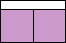 | 1 | |
| 2 | x = 3 | (1+2√2)/6 = .638+ | ||
| x + 2y = 4 + 2√2 | 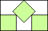 | 1/√2 = .707+ | ||
| y = 2 | 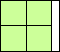 | 1 | ||
| 3 | x = 4 | .470+ | ||
| x = 2 [ 2 - 3 t2 - t3 + (t2 - 2 t + 2)√(1 - t2) ] / (2 - 3
t2) y = 2 [ 1 - t2 - t3 + √(1 - t2)3 ] / (2 - 3 t2) | (1+2√2)/7 = .546+ | (MM) | ||
| y = 2 | 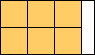 | 1 | ||
| 4 | x = 5 | (6√2-1)/20 = .374+ | (MM) | |
| x + 4y = 4 + 6√2 | 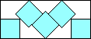 | (2+3√2)/14 = .445+ | (MM) | |
| y = 2 | 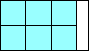 | 2/3 = .666+ | (MM) | |
| x = 3 | 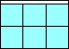 | (1+√2)/3 = .804+ | (MM) | |
| x + y = 4 + √2 | 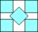 | 1 | (MM) | |
| 5 | x = 6 | | .310+ | (MM) |
| x = 2 [ 3 - 2 t - 5 t2 - 2 t3 + 2(t2 - 2 t + 3)√(1 - t2) ]
/ (3 - 5 t2) y = 2 [ 1 - t2 - 2 t3 + 2 √(1 - t2)3 ] / (3 - 5 t2) | 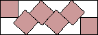 | (3+4√2)/23 = .376+ | (MM) | |
| y = 2 | 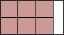 | 2/3 = .666+ | (MM) | |
| x = 3 | 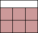 | 1 | (MM) | |
| 6 | x = 7 | (10√2-3)/42 = .265+ | (MM) | |
| x + 6y = 4 + 10√2 | 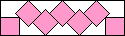 | (4+5√2)/34 = .325+ | (MM) | |
| y = 2 | 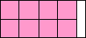 | 1/2 = .500 | (MM) | |
| x = 4 | (1+√2)/4 = .603+ | (MM) | ||
| x + y = 5 + √2 | 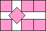 | (6-3√2)/2 = .878+ | (MM) | |
| y = 3 | 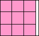 | 1 | (MM) | |
| 7 | x = 8 | .231+ | (MM) | |
| x = 2 [ 4 - 6 t - 7 t2 - 3 t3 + 3(t2 - 2t + 4)√(1 - t2) ]
/ (4 - 7t2) y = 2 [ 1 - t2 - 3t3 + 3√(1 - t2)3 ] / (4 - 7t2) | (5+6√2)/47 = .286+ | (MM) | ||
| y = 2 | 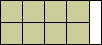 | 1/2 = .500 | (MM) | |
| x = 4 | 1/√2 = .707+ | (MM) | ||
| y6 - 10y5 + 29y4 - 8y3 - 48y2 + 64y + x4 - 16x3 + 48x2 - 64x + 2x2y3 - 14x2y2 + 40x2y - 64xy + 64 = 0 | 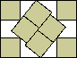 | .795+ | (MM) | |
| (x-2)2 + (y-2)2 = 4 | 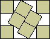 | 3(2-√3) = .803+ | (MM) | |
| y = 3 | 1 | (MM) | ||
| 8 | x = 9 | (14√2-5)/72 = .205+ | (MM) | |
| x + 8y = 4 + 14√2 | (6+7√2)/62 = .256+ | (MM) | ||
| y = 2 | 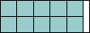 | 2/5 = .400 | (MM) | |
| x = 5 | (1+√2)/5 = .482+ | (MM) | ||
| x + y = 6 + √2 | 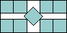 | (2+6√2)/17 = .616+ | (MM) | |
| x + 2y = 6 + 3√2 | 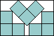 | 1/√2 = .707+ | (MM) | |
| y = 3 | 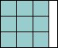 | 1 | (MM) | |
| 9 | x = 10 | .184+ | (MM) | |
| x = 2(5 - 12t - 9t2 - 4t3 + 4 (t2 - 2t + 5)√(1 - t2))/(5 - 9t2) y = 2(1 - t2 - 4t3 + 4√((1 - t2)3))/(5 - 9t2) | (7 + 8√2)/79 = 0.231+ | (MM) | ||
| y = 2 | 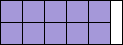 | 2/5 = .400 | (MM) | |
| x = 5 | 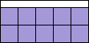 | 2√2/5 = 0.565+ | (MM) | |
| x + 2y = 5 + 4√2 | 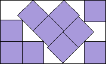 | 3(1 + 4√2)/31 = 0.644+ | (MM) | |
| y = 3 | 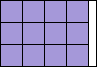 | 3/4 = 0.750 | (MM) | |
| x = 4 | 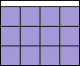 | (1 + √5)/4 = 0.809+ | (MM) | |
| x4 + y4 - 10x3 - 10 y3 + 20x2 + 20y2 + 8x + 8y - 2x2y2 + 10x2y + 10xy2 - 42xy - 32 = 0 | 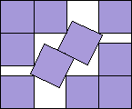 | (73 + 5√13-√(730√13 - 2446))/90 = 0.859+ | (MM) | |
| (x - 3)2 + (y - 3)2 = 1 | 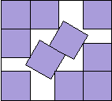 | 1 | (MM) |
Here are the results known for circles. The limiting packing shows how one more circle can fit if you cross the boundary curve.
| n | Boundary Curves of Cn | Limiting Packing | Largest Aspect Ratio | Author |
|---|---|---|---|---|
| 1 | (x-1)2 + (y-1)2 = 1 | 1 | ||
| 2 | (x-1)2 + 4(y-1)2 = 4 | (2+√3)/4 = .933+ | ||
| (2x-2+√3)2 + (2y-2+√3)2 - 4√3 x y = (2-√3)2 | 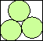 | 1 | (MM) | |
| 3 | (x-1)2 + 9(y-1)2 = 9 | (2+√3)/5 = .746+ | ||
| (x-2)2 + (y-1)2 = 1 | 1 | |||
| 4 | (x-1)2 + 16(y-1)2 = 16 | 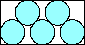 | (2+√3)/6 = .622+ | |
| 4(x-1+√3)2 + (4y-4+√3)2 - 8√3(xy-1) = 19 | 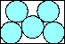 | √3-1 = .732+ | (MM) | |
| (x-1)2 + (y-1)2 = 4 | 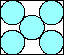 | 1 | ||
| 5 | (x-1)2 + 25(y-1)2 = 25 | (2+√3)/7 = .533+ | ||
| (x-3)2 + (y-1)2 = 1 | 2/3 = .666+ | |||
| (x-1)2 + 4(y-2)2 = 4 | 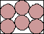 | 5(√3-1)/4 = .915+ | ||
| 4(x-1)2 + 9(y-1)2 = 36 | 1 | |||
| 6 | (x-1)2 + 36(y-1)2 = 36 | (2+√3)/8 = .466+ | ||
| (x-2+√3)2 + (2y-2+√3)2 - 2√3 x y = (2-√3)2 | 4-2√3 = .535+ | (MM) | ||
| 2x - √[y (4 - y)] - 2 √[(1 + y)(3 - y)] = 2 | 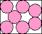 | (2+2√3)/(4+4√12) = .932+ | (MM) | |
| 4x - √3 y - 2 √[y (4 - y)] - √[(1 + y)(3 - y)] = 4 - √3 | 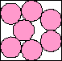 | .981+ | (MM) | |
| (x + 2y)(1 + √3) - x √[(y - 1)(3 - y)] + (1 - √3 - y + √[3 (y - 1)(3 - y)]) √[(x - 1)(3 - x)] - √3 x y = 3 + 2√3 | 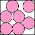 | 1 | (MM) | |
| 7 | (x-1)2 + 49(y-1)2 = 49 | (2+√3)/9 = .414+ | (MM) | |
| (x-4)2 + (y-1)2 = 1 | 1/2 = .500 | (MM) | ||
| (x-1)2 + 9(y-2)2 = 9 | 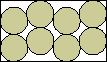 | 5/(2+3√3) = .694+ | (MM) | |
| 21(x-1+2/√3)2 + (7y-7+2√3)2 - 28√3(xy - 1) = 103 | 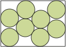 | (217+13√651)/(217+38√217) = .706+ | (DC) | |
| (x-1)2 + 4(y-1)2 = 16 | 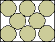 | (1+√3)/3 = .910+ | (MM) | |
| (2x-2+√3)2 + (2y-2+√3)2 - 4√3 x y = 10 - 4√3 | 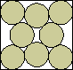 | 1 | (MM) | |
| 8 | (x-1)2 + 64(y-1)2 = 64 | (2+√3)/10 = .373+ | (MM) | |
| 4(x-3+√3)2 + (4y-4+3√3)2 - 8√3 x y = (3√3-4)2 | 1-1/√3 = .422+ | (MM) | ||
| x + 2y - (x - 1)√[(y - 1)(3 - y)] - (y - 1)√[(x - 1)(5 - x)] = 4 | (6+√3+3√((3+4√3)/13))/16 = .647+ | (MM) | ||
| (x - 1)√[(2y - √3)(4 + √3 - 2y)] + 2(y - 2)√[x (4 - x)] - x + 2(2 - √3)y = 5 - 2√3 | 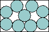 | .647+ | (MM) | |
| 2x - 5 = 2√[4-(y-1)2] + (y-1)√[(3-(y-1)2)/(1+(y-1)2)] | 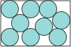 | .665+ | (DC) | |
| 4(x-1)2 + 25(y-1)2 = 100 | 2(1+√3)/7 = .780+ | (MM) | ||
| 4(x-3)2 + (y-1)2 = 4 |  | 1 | (MM) | |
| 9 | (x-1)2 + 81(y-1)2 = 81 | (2+√3)/11 = .339+ | (DC) | |
| (x-5)2 + (y-1)2 = 1 | 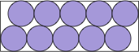 | 2/5 = .400 | (DC) | |
| (x-1)2 + 16(y-2)2 = 16 | 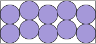 | 5/(2+4√3) = .560+ | (DC) | |
| 9(x-1)2 + 16(y-2)2 = 144 | 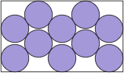 | .587+ | (DC) | |
| (x-2)4 (8y2-20y+13) + 8(x-2)2 (y-1)2 (8y2-28y+17) + 16(y-1)4 (8y2-36y+37) = 0 | 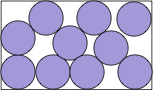 | .590+ | (DC) | |
| very complicated | 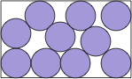 | 2(1+√3)/7 = .596+ | (DC) | |
| 16(x-1)4 + 8(x-1)2 (17y2-36y-48) + (15y2-28y-48)2 == 0 | 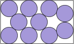 | (2+2√3)/(6+√(2√3)) = .695+ | (DC) | |
| 2(x-1) = √3(y-1) + √[(4-y)y] + √[(3-y)(1+y)] | 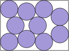 | .737+ | (DC) | |
| very complicated | (21+2√3)/33 = .741+ | (DC) | ||
| very complicated | .754+ | (DC) | ||
| 256(y-1)8 + 128(x2-8x+4) (y-1)6 + 16(7x4-76x3+278x2-344x+144) (y-1)4 - 8(x-1) (x-4) (3x4-15x3-4x2+68x-64) (y-1)2 + (x-1)2 (x-4)2 (3x2-15x+16)2 = 0 | (4+√(2√3))/(4+2√3) = .785+ | (DC) | ||
| very complicated | .801+ | (DC) | ||
| very complicated | .806+ | (DC) | ||
| x6 - 12x5 + 3x4 (y2-4y+22) - 8x3 (3y2-13y+28) + 3x2 (y4-8y3+44y2-128y+163) - 4x (3y4-26y3+96y2-184y+153) + y6 - 12y5 + 66y4 - 224y3 + 489y2 - 612y + 328 = 0 | .812+ | (DC) | ||
| 16(x-1)2 (x2-2x-2) + 16(8x2-16x+5)y - 4(10x2-20x-21)y2 - 96y3 + 21y4 = 8(x-1) (4x2-8x-2+8y-3y2) √[y(4-y)] | 6/(2+√3) = .833+ | (DC) | ||
| 16(x-1)2 + 9(y-1)2 = 144 | .939+ | (DC) | ||
| very complicated | (37+7√7)/57 = .974+ | (DC) | ||
| very complicated | 1 | (DC) | ||
| 10 | (x-1)2 + 100(y-1)2 = 100 | (2+√3)/12 = .311+ | (DC) | |
| (x-4+√3)2 + 4(y-1+√3)2 2√3(xy-4) = 16 |  | 2/(4+√3) = .348+ | (DC) | |
| (x-2)4 (8y2-20y+13) + 2(x-2)2 (y-1) (40y3-212y2+337y-173) + 64(x-2) (y-3) (y-1)3 + (y-1)2 (72y4-660y3+2173y2-3022y+1501) = 0 | .466+ | (DC) | ||
| (x-1)2 + 9(y-1)2 = 36 | (1+√3)/4 = .683+ | (DC) | ||
| (2x-4+√3)2 + 4(y-1+√3)2 4√3(xy-2) = 19 | 6-3√3 = .803+ | (DC) | ||
| very complicated | .996+ | (DC) | ||
| very complicated | 1 | (DC) | ||
| 11 | (x-1)2 + 121(y-1)2 = 121 |  | (2+√3)/13 = .287+ | (DC) |
| (x-6)2 + (y-1)2 = 1 | 1/3 = .333+ | (DC) | ||
| (x-1)2 + 25(y-2)2 = 25 | 5/(2+5√3) = .469+ | (DC) | ||
| 9(x-1)2 + 25(y-1)2 = 225 | .488+ | (DC) | ||
| 4(3-y) (y-1) (7-5x+x2-8y+2xy+3y2)2 = (3-8x-x2+14y+8xy+2x2y-19y2-4xy2+6 y3)2 | (3744+675√3+√(630291+1332640√3))/13292 = .498+ | (DC) | ||
| (x-4)4 (8y2-20y+13) + 2(x-4)2 (y-1)2 (8y2-28y+17) + (y-1)4 (8y2-36y+37) = 0 | .503+ | (DC) | ||
| 2x - 5 = 4√[4-(y-1)^2] + (y-1)√[(3-(y-1)^2)/(1+(y-1)^2)] | .512+ | (DC) | ||
| 4(x-1)2 + 49(y-1)2 = 196 | 2(1+√3)/9 = .607+ | (DC) | ||
| 4(x-4)2 + (y-1)2 = 4 | 3/4 = .750 | (DC) | ||
| (x-1)2 + 9(y-3)2 = 9 | 7/(2+3√3) = .972+ | (DC) | ||
| 25(x-1)2 + 9(y-1)2 = 225 | 1 | (DC) |
| n | Boundary Curves of Tn | Limiting Packing | Largest Aspect Ratio | Author |
|---|---|---|---|---|
| 1 | x2 + y2 - √3xy = 1/4 | 1 | (MM) | |
| 2 | x2 + y2 = 3 | 1 | (MM) | |
| 3 | 4y2 + 3x2 + 2√3xy - 9x - 6√3y + 6 = 0 | (3√39 - 9√3)/4 = .786+ | (MM) | |
| 16x4 + 64x2y2 - 64√3yx2 - 8x2 + 1 = 0 | 3 - √2 + √3 - √6 = .868+ | (MM) | ||
| (2x - √3)2 + (2y - √3)2 = 3 | 1 | (MM) | ||
| 4 | 4y4 + 4y2x2 - 21y2 - 3x2 - 6√3xy + 36 = 0 | .717+ | (MM) | |
| 3y + √3x = 4 + 2√3 | 1 | (MM) |
Here is a picture of the small Cn:
If you can extend any of these results, please e-mail me. Click here to go back to Math Magic. Last updated 2/26/19.